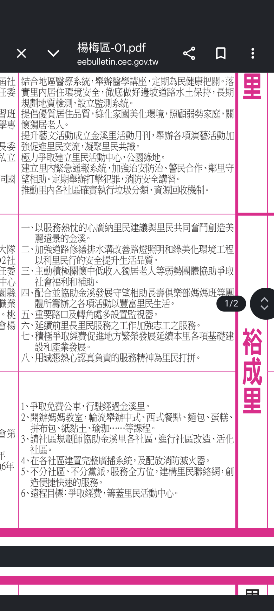
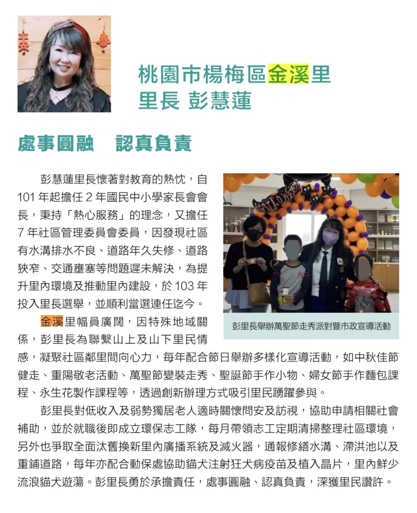

金溪里里長與社區發展
歷屆選舉公報
2014 年政見分析
民國 103 年（2014）第 1 屆里長選舉公報中，金溪里的三段政見依序來自孫鳳雲、廖洺鋒與彭慧蓮。提案反映兩項地方需求：讓山上與山下居民更容易往來，以及改善道路、排水和公共空間。2014 年選舉公報原件 ↗
- 免費公車與日常通行
- 交通接駁可幫助長者、學生和沒有車的家庭採買、就醫、轉乘及參加活動。區公所 2026 年站址表已有 L609「三民金溪路口」站，班次是否實用還要看步行到站的距離，以及往返時間能否配合。楊梅免費公車站址表 ↗
- 道路、排水、照明與邊坡
- 改善積水、破損路面與夜間照明，能改善居民雨天出入、接送及步行的條件。把問題記錄到具體路段，有助於安排清疏、修繕或專業邊坡評估。
- 長者關懷、福利與健康
- 主動訪視、協助申請補助和轉介，可接觸較少出門或不熟悉申請程序的居民。健康活動也提供了解需求和接續服務的機會。
- 緊急通報、消防與治安
- 廣播、鄰里聯絡網和巡守可協助分散的社區收到通知與互相支援。實際成效取決於設備維護、訊息覆蓋、通報分工，以及監視器是否對應有紀錄的需求。
- 藝文活動與社區規劃
- 手作課、藝文活動與社區月刊可讓不同社區的居民建立聯繫，讓消息傳到更多家庭。社區規劃師可把居民的意見整理成具體的空間改善方案。
- 活動場地、綠地與環境維護
- 固定場地可承接親子、長者和居民活動，清掃、回收與綠地維護則影響公共空間的日常使用。楊光國中小活動中心於 2026 年 11 月 2 日啟用，市府宣布將在校務允許的情況下開放附近居民使用。桃園市府公告 ↗
社區報導與圖片
2023 年表揚專輯記載的社區行動
民國 112 年（2023）的表揚專輯記載，金溪里曾辦理節慶及手作活動、訪視與補助協助，並成立環保志工隊。專輯也記錄了廣播與滅火器汰換，以及通報水溝、滯洪池和道路修繕。2023 年表揚專輯原件 ↗


「一方水土，一方色」的在地連結
矮坪子走讀與土色工作坊可以讓山上、山下的居民共享地方記憶。記錄參與者的到場方式、難走的路段及希望使用的場地，也能讓下一場活動更好安排，並為里辦公處討論交通或公共空間需求提供具體例子。